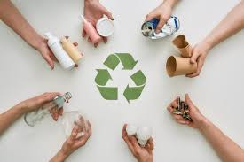

El día de hoy presentaré una noticia sobre el poco conocimiento que hay sobre el reciclaje en la mayoría de las empresas en el Perú.
El Perú carece de una cultura de reciclaje que está directamente vinculada a un problema logístico. Lima, por ejemplo, tiene tachos de basura ubicados a cada kilómetro y medio de distancia, además de contar con muy pocas estaciones de reciclaje.
En el Perú, solo se recicla el 16% de los residuos sólidos, siendo esta práctica una de las mejores soluciones para el problema de la acumulación de residuos. Este procedimiento permite aprovechar mejor los productos al recuperarlos de manera directa o indirecta. Un claro ejemplo es el de las bebidas embotelladas en el país, de las cuales solo el 36% se reutilizan, a pesar de la gran cantidad de empresas dedicadas a este sector.
El reciclaje no solo es una responsabilidad ambiental, sino también una oportunidad estratégica para las empresas. En el Perú, el 47,2% de la población urbana se ha beneficiado de la implementación de esta práctica. En cuanto a las empresas, al adoptar prácticas de reciclaje inteligentes y sostenibles, pueden fortalecer su posición en el mercado y contribuir positivamente al bienestar del planeta.
Para lograr que esto sea posible, la formalización del reciclaje en el Perú es vital. “La clave está en ayudar a que los recicladores informales comiencen su proceso de formalización para tener un trabajo más digno. A esto debe sumarse un trabajo adecuadamente articulado entre el sector público, el privado y el involucramiento de organizaciones especializadas. Sin duda, estamos hablando de grandes retos que enfrentará Perú a lo largo del 2024. Esperamos que, con el nombramiento de un nuevo titular en el Ministerio del Ambiente, se logre impulsar la aprobación del Decreto Supremo, para que el país siga avanzando en este aspecto”, enfatiza la directora de Recicla Latam.
Esta normativa es 100% necesaria para el reciclaje en el Perú. Desde 2021, la organización sin fines de lucro que lidera Fiorella Danjoy ha venido trabajando en esta iniciativa, favoreciendo a varias regiones del país con el desarrollo de una economía circular. Esta economía se basa en un trabajo articulado que une los esfuerzos de la ciudadanía, las autoridades y las empresas a través de diferentes acciones vinculadas al reciclaje.
En conclusión, en el Perú se debe promover más educación sobre el reciclaje, y la tecnología sería un candidato ideal para enseñar a las personas que desconocen el tema. Esto es especialmente importante para los trabajadores de las empresas de productos en general, ya que estas generan una gran cantidad de residuos y reciclan muy poco.